Astronomía multi-mensajero
Neutrinos y ondas gravitacionales: cuando el mensajero ya no es la luz. Homestake, Super-Kamiokande, IceCube, LIGO y el Pulsar Timing Array.
Toda la astronomía anterior usaba un solo canal: la onda electromagnética. Esta clase abre dos canales nuevos — partículas casi indetectables y perturbaciones del espacio mismo — y muestra la ingeniería extrema que hace falta para «escucharlos».
Más allá de la luz: multi-messenger astronomy
La astronomía tradicional «ve» ondas electromagnéticas (del radio al gamma: mismo fenómeno físico). Pero hay otros portadores de información desde el cosmos.
El módulo venía recorriendo tecnologías por banda: telescopio óptico, detectores IR, radio, alta energía. Esta clase cierra el recorrido con fenómenos que no son electromagnéticos: los neutrinos (partículas) y las ondas gravitacionales (perturbaciones del espacio-tiempo). Si sabemos interpretarlos, entregan información complementaria e independiente de la luz.
Piensa en cada mensajero como un canal de comunicación independiente con su propio ruido, ancho de banda y función de transferencia. La luz se absorbe y dispersa en el camino; el neutrino casi no interactúa (canal de bajísima tasa pero sin distorsión); la onda gravitacional atraviesa todo. Combinar canales es fusión de sensores: la información conjunta supera a la de cualquier canal aislado.
Neutrinos: tres sabores y una masa diminuta
Partículas elementales del modelo estándar, familia de los leptones. Vienen en tres «sabores»: νe, νμ, ντ.
En el modelo estándar, los quarks combinados forman protones y neutrones; los bosones (gluón, fotón, W, Z) median las fuerzas; y los leptones incluyen al electrón, al muón, al tau y sus tres neutrinos asociados. El electrón — y el neutrino — son fundamentales: no están hechos de quarks.
- Los neutrinos oscilan: un νe no se queda como νe, va cambiando de sabor mientras viaja.
- Que cambien implica que experimentan tiempo propio → no viajan exactamente a c → tienen masa. (Para un fotón, sin masa, el reloj propio está congelado: no puede «evolucionar».)
- La masa es minúscula: menor que 10−6 veces la masa del electrón. Su valor exacto es uno de los grandes problemas abiertos de la física.
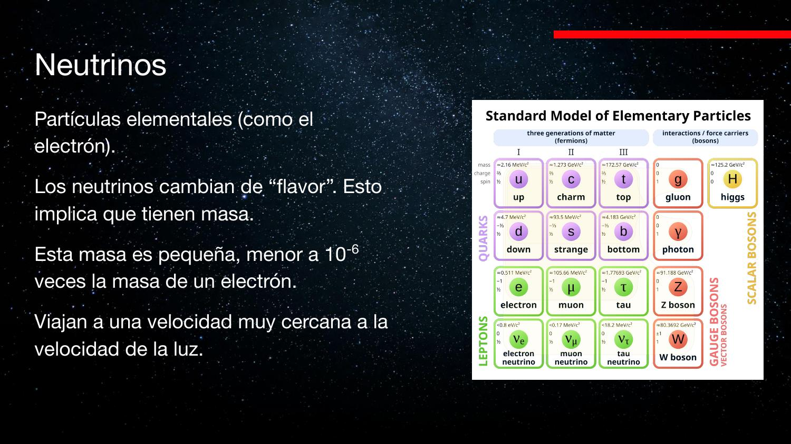
El audio dice «neutrino tipo K» y «combinaciones de cuartos»: son el neutrino tau (ντ) y combinaciones de quarks. La diapositiva 4 muestra la tabla correcta: electron / muon / tau neutrino.
El argumento «cambia ⇒ tiene masa» es de relatividad especial pura: la dilatación temporal hace que a v = c no transcurra tiempo propio. Un sistema que muta de estado necesita un reloj interno andando; por lo tanto v < c y la masa en reposo no puede ser cero. Un argumento cualitativo con consecuencia cuantitativa — estilo análisis dimensional.
El Sol: una fábrica de neutrinos
La fusión de H en He vía cadena protón-protón libera un νe en cada conversión p → n.
Al fusionar hidrógeno, dos protones forman deuterio: uno de los protones decae a neutrón, y para conservar carga y número leptónico se emiten un positrón y un neutrino electrónico:
Contar neutrinos = contar reacciones de fusión = auditar el balance de energía del Sol. Esa fue la motivación original de la detección de neutrinos solares (segunda mitad del siglo XX).
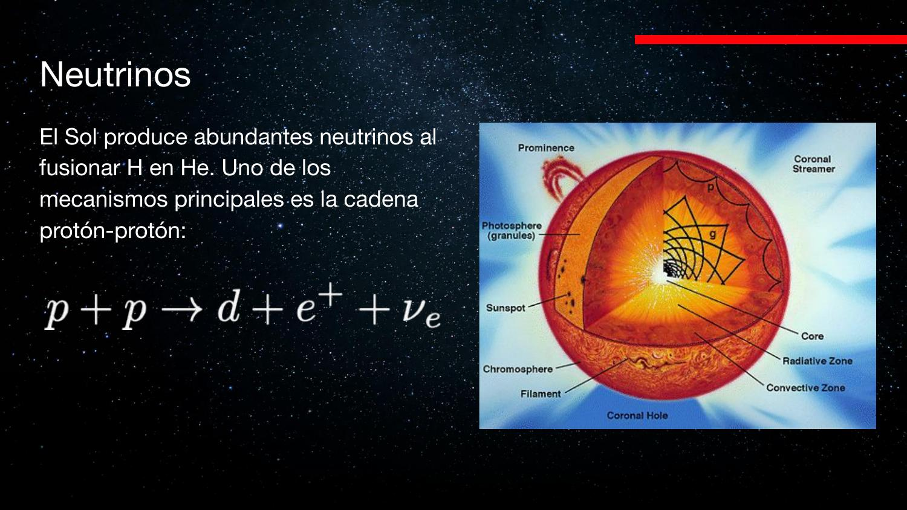
El audio menciona la «cadena CN»: se refiere al ciclo CNO (carbono-nitrógeno-oxígeno), el otro mecanismo de fusión visto en el curso de estrellas.
Por qué son fantasmas: la fuerza nuclear débil
Detectar = lograr una interacción. El neutrino no tiene carga (nada electromagnético) y su masa es ínfima (nada gravitacional útil). Solo queda la fuerza débil.
Un CCD detecta fotones porque el fotón interactúa con el silicio y hace saltar un electrón. Para el neutrino ese camino no existe: la única interacción disponible es la fuerza nuclear débil, mediada por los bosones W y Z. El mecanismo: al pasar cerca de un núcleo, el neutrino intercambia un bosón Z⁰ — como lanzar una roca desde un skate, el intercambio de momentum deflecta ambas partes. Eso es la fuerza.
El problema es el alcance: el bosón solo «viaja» ~0,001 veces el tamaño de un protón. El neutrino debe pasar a esa distancia de un núcleo para que ocurra algo. Como la materia es esencialmente vacío a esa escala, casi nunca ocurre:
- Cada segundo, ~1010 neutrinos atraviesan cada cm² de tu cuerpo sin que lo notes.
- De cada 1013 neutrinos que atraviesan el diámetro de la Tierra, solo 1 interactúa con algún átomo del planeta.
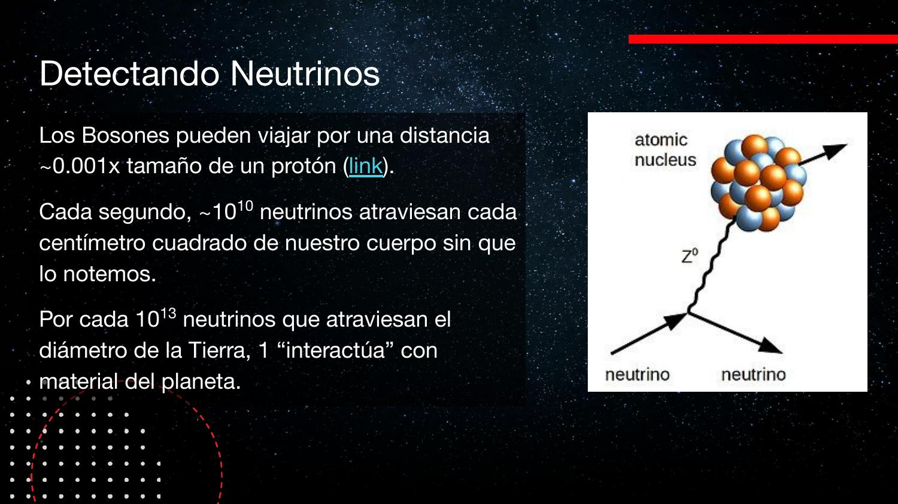
El audio dice que el bosón alcanza «un 1% del tamaño de un protón»; la diapositiva 7 indica ~0,001× (0,1%) el tamaño del protón. También «bosón cero» → bosón Z⁰.
¿Qué significa «chocar»? Un protón choca con una pared porque la repulsión de Coulomb (∝ q₁q₂/r², con constante grande) lo deflecta a distancias «grandes». La gravedad tiene la misma forma funcional pero constante minúscula (por eso un imán le gana a todo el planeta sosteniendo un clavo). La fuerza débil es efectiva solo a distancias ínfimas: chocar es siempre una interacción, y cada fuerza define su propia sección eficaz.
Homestake y el problema de los neutrinos solares
Un tanque de cloro en una mina a 1,5 km de profundidad. Durante años detectó solo ⅓ de lo esperado.
El experimento de Homestake usó un tanque con una solución rica en cloro, bajo tierra (para blindarse de rayos cósmicos). Cuando un νe interactúa con el isótopo ³⁷Cl, un neutrón del núcleo se convierte en protón y el átomo se transmuta a argón:
El resultado, sostenido por años: un tercio del flujo predicho por el modelo solar. Peor que un exceso — un déficit no se tapa con «fuentes extra». ¿Estaba mal el modelo del Sol… o el experimento?
La resolución: oscilaciones
La reacción del cloro solo es sensible a νe. Experimentos posteriores midieron simultáneamente el flujo total (todos los sabores) y el flujo de νe: el total coincidía con la predicción solar, y exactamente ⅓ llegaba como νe. El Sol produce νe, pero en el camino oscilan entre los tres sabores. El «experimento fallido» terminó demostrando que los neutrinos tienen masa — con premios Nobel de por medio.
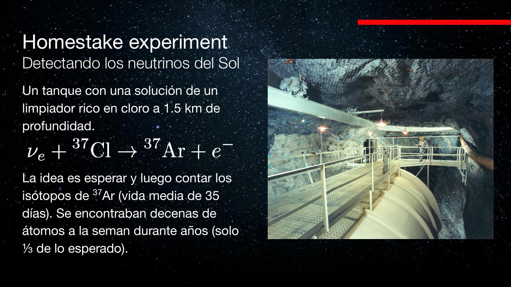
«Experimento de Homestead» → Homestake (mina de oro en Dakota del Sur, EE.UU.). El audio duda si «no se sabía que existían otros tipos de neutrino»: lo clave es que no se sabía que cambiaban de sabor en el camino.
Caso de manual de sesgo de instrumento: el sensor solo respondía a un subconjunto de la señal (un «filtro pasa-sabor»). La discrepancia sistemática de un factor 3 no era ruido: era la función de respuesta del detector. Moraleja para cualquier pipeline de medición: modela qué es lo que tu sensor realmente mide.
Super-Kamiokande: Cherenkov en 50 000 toneladas de agua
Detección moderna: la interacción del neutrino en agua produce partículas más rápidas que la luz en el agua → destello Cherenkov.
Recordando la clase pasada: cuando una partícula cargada supera c/n (la velocidad de la luz en el medio), emite radiación Cherenkov. Un neutrino que interactúa dentro de un tanque de agua genera una cascada de partículas que producen ese destello, y detectarlo equivale a detectar al neutrino.
Super-Kamiokande (Japón): 50 000 toneladas de agua ultra purificada, 1 km bajo tierra, rodeadas de 13 000 fotomultiplicadores — cada uno es como un «pixel gigante» basado en efecto fotoeléctrico con amplificación, tan sensible que podría detectar la luz de una vela desde la Luna. Bajo tierra para blindarse de rayos cósmicos; agua purísima para que impurezas no generen destellos falsos.
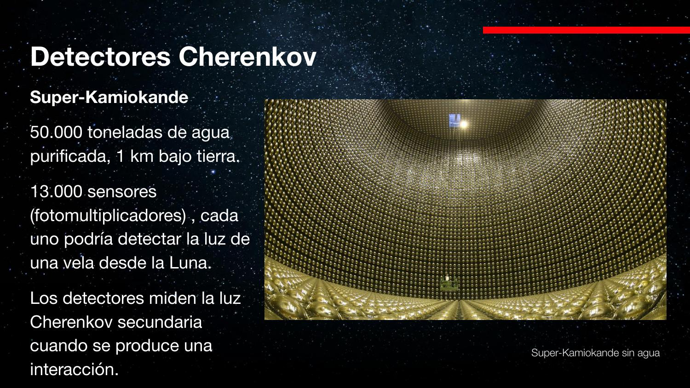
El audio dice «radiación Chereto», «Cherekov», «chelen»: siempre es radiación Cherenkov. Y los «puto multiplicadores» / «fotomultificadores» son fotomultiplicadores (PMT).
El fotomultiplicador es un amplificador analógico extremo: un fotón arranca un electrón (fotoeléctrico) y una cadena de dinodos multiplica la carga ~10⁶–10⁷ veces. Es el mismo problema de un receptor con ganancia altísima: el diseño completo del experimento (profundidad, pureza del agua) es supresión de ruido de fondo, no mejora del sensor.
IceCube: un km³ de hielo antártico como detector
¿Dónde conseguir un «tanque» gigante de agua pura gratis? En el hielo de la Antártida.
Mientras más grande el tanque, más interacciones. IceCube usa 1 km³ de hielo antártico como volumen detector: se perforan pozos de 2,5 km y se cuelgan cables como «rosarios» de fotomultiplicadores (DOMs) — el primero a 1,5 km de profundidad y el último a 2,5 km, con módulos cada 17 m y cuerdas separadas 125 m en una grilla.
Cuando un neutrino interactúa dentro del hielo, el destello Cherenkov llega a distintos módulos en distintos instantes: un computador en superficie reconstruye el camino temporal de la luz y con ello la dirección de origen del neutrino — igual que triangular una fuente por tiempos de llegada.
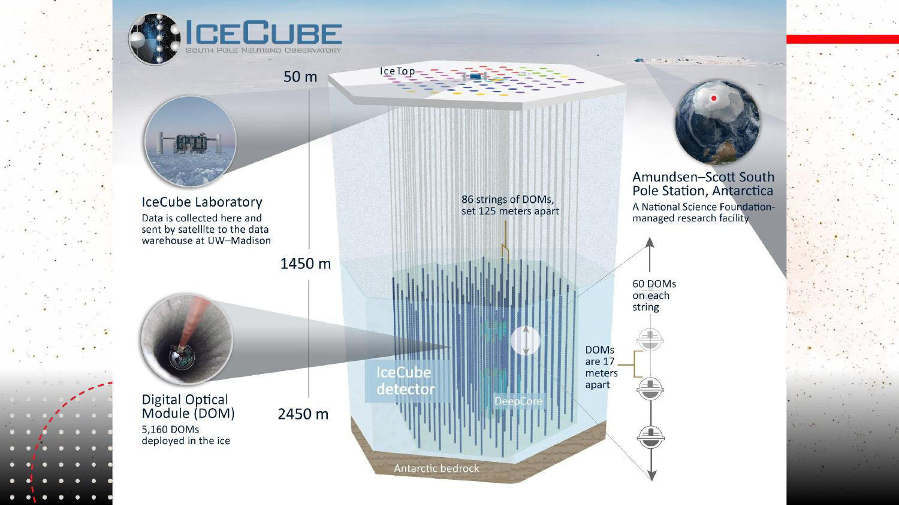
2017: el neutrino del blazar
El 22 de septiembre de 2017, IceCube detectó un neutrino muónico de alta energía y emitió una alerta con sus coordenadas. La búsqueda de contrapartes electromagnéticas identificó al blazar TXS 0506+056 — un AGN (agujero negro supermasivo) con su jet apuntando hacia nosotros, ya conocido como fuente de rayos gamma — como única fuente probable. Primera asociación confirmada neutrino ↔ fuente electromagnética fuera del Sol: nace en serio la multi-messenger astronomy.
La energía de ese neutrino: ~290 TeV. Comparación: el LHC, el colisionador más potente construido, alcanza ~13 TeV. El universo nos regala aceleradores que no sabemos construir.
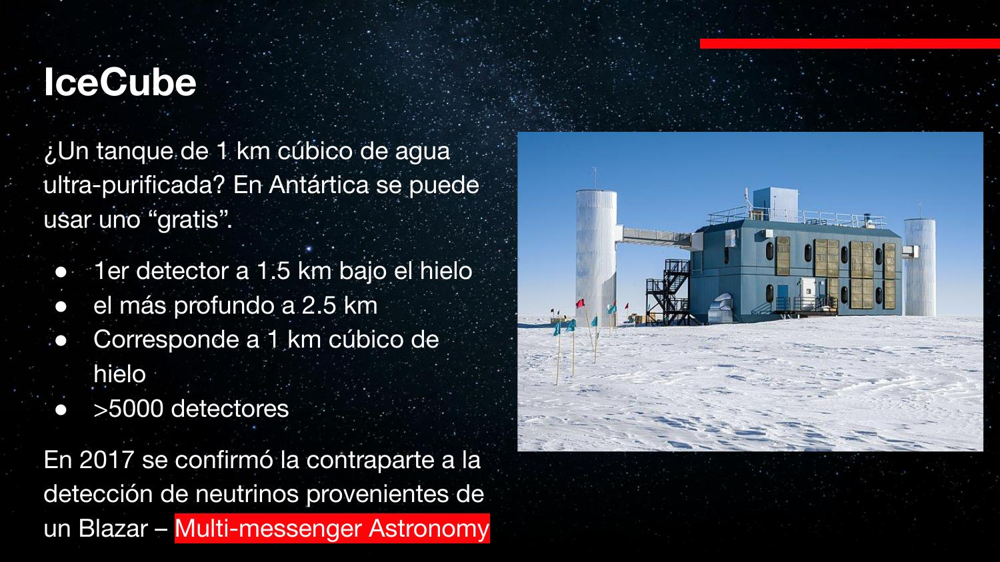
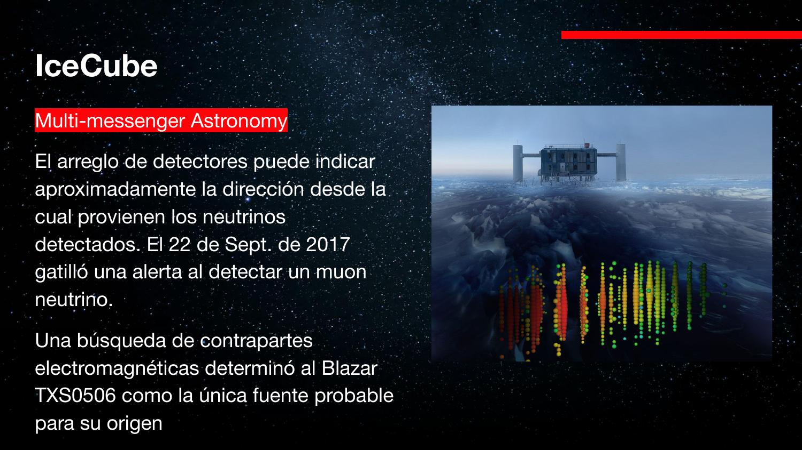
«Large Hydrogliber» → Large Hadron Collider (LHC). «Endocrinos», «nutrientes», «nutrirnos» → neutrinos (el reconocedor de voz insiste). El audio dice «13.000 sensores» hablando de IceCube en un momento: ese número es de Super-Kamiokande; IceCube tiene >5000 DOMs (diapositivas 12–13).
El supercomputador de IceCube igual necesita refrigeración activa a −40 °C exteriores: la densidad de calor de un datacenter no se resuelve «abriendo la ventana». Los datos viajan por satélite a UW–Madison.
Ondas gravitacionales: perturbar el espacio mismo
Predichas por la relatividad general. Ondas transversales donde lo que oscila es la distancia entre puntos del espacio.
Toda onda es una perturbación que viaja: en una cuerda, la altura; en el sonido, la densidad del aire (perturbación longitudinal, en la dirección de viaje); en la luz, los campos E y B (transversal). En una onda gravitacional lo que se perturba son las distancias en el espacio, en dirección perpendicular a la propagación: un anillo de puntos se estira en un eje y se comprime en el otro, alternadamente.
La magnitud se cuantifica con el strain h: la deformación relativa máxima del espacio.
Cualquier masa acelerada genera ondas gravitacionales — mover una roca también — pero con amplitudes ridículamente pequeñas. Solo eventos extremos (masas estelares compactas orbitando a velocidades relativistas) producen strains detectables.
La firma detectable: el «chirp» del merger
Un sistema binario emite ondas gravitacionales todo el tiempo, pero esa emisión constante es indistinguible del ruido de fondo. Lo detectable es el merger: en los instantes finales la órbita se encoge, la frecuencia y la amplitud crecen aceleradamente y la señal muere de golpe. Ese barrido de frecuencia (como un sonido que se agudiza y se corta) es la firma que se busca en los datos.
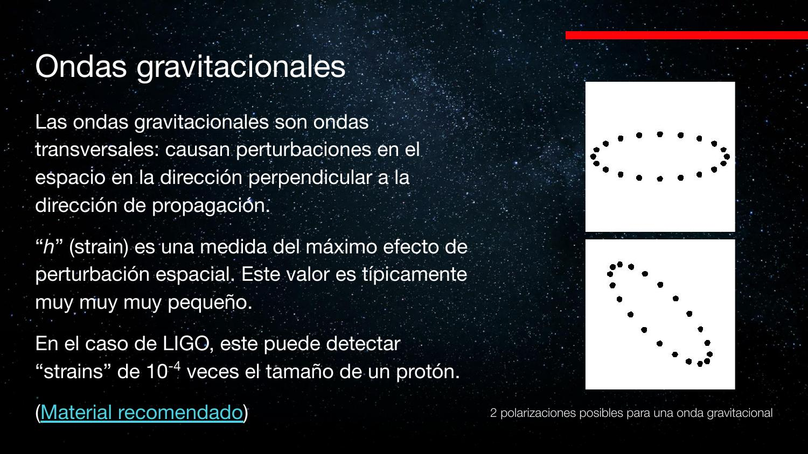
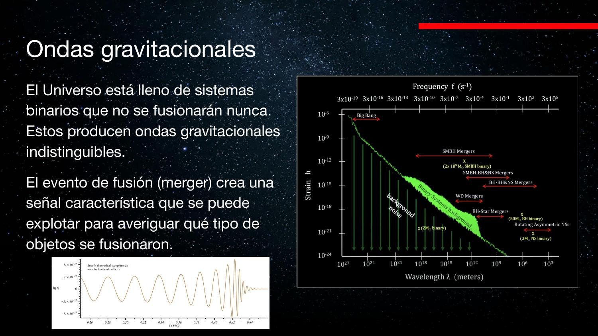
El audio dice «sprain» y «spray»: es strain (h). También dice «10⁻⁴ veces el tamaño de un neutrón» una vez: la diapositiva 17 confirma protón. Y «el higo» → LIGO.
LIGO: interferometría láser y GW150914
Un interferómetro de Michelson gigante: la interferencia entre dos brazos revela cambios de camino óptico comparables a la longitud de onda del láser.
Un láser potente incide en un divisor de haz: mitad de la luz viaja por un brazo, mitad por el otro, perpendicular. Espejos al final de cada brazo devuelven ambos haces, que se recombinan hacia un detector. Si los caminos son idénticos, las ondas llegan en fase (interferencia constructiva); una diferencia de media longitud de onda las deja en contrafase (destructiva). Al pasar una onda gravitacional, un brazo se alarga y el otro se acorta alternadamente → la intensidad en el detector oscila.
Lo que se busca no es interferencia constante, sino el patrón chirp: oscilación de frecuencia creciente que se acelera y desaparece. El desafío de ingeniería es aislar el instrumento de todo lo demás: microsismos, dilataciones térmicas, camiones — cualquier cosa produce ΔL enormes comparados con la señal.
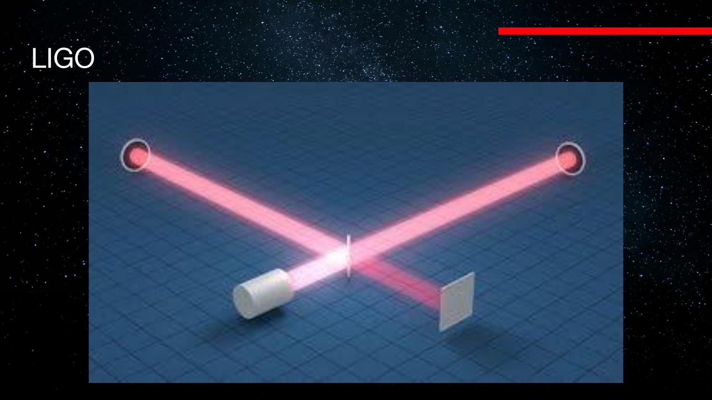
GW150914: la primera detección
El 14 de septiembre de 2015, los dos detectores LIGO (Hanford y Livingston, EE.UU.) registraron la misma señal: la fusión de dos agujeros negros de 36 y 29 masas solares, dejando un remanente de 62 M☉, a ~1,4×10⁹ años luz (redshift ~0,09).
¿Cómo se sabe qué colisionó? Se compara la señal contra una librería de formas de onda simuladas con relatividad general (costosas computacionalmente): el par de masas que mejor reproduce la curva observada es la solución. Es template matching — correlación cruzada contra un banco de plantillas, la misma técnica de un receptor de radar o GPS.
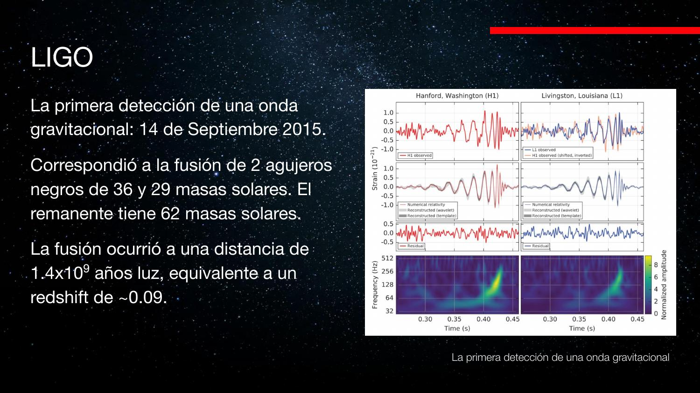
«Laigo», «LIPO», «el higo» → LIGO. El audio dice que el túnel «tiene como un kilómetro»: los brazos de LIGO miden 4 km (dato externo; las diapositivas no lo especifican). La fecha exacta y las masas vienen de la diapositiva 21.
¿Dónde quedaron las ~3 M☉ perdidas? Se radiaron como energía de la onda misma: deformar el espacio cuesta energía. Que una perturbación de 10⁻⁴ radios de protón en el detector corresponda a 3 soles convertidos en energía te dice lo rígido que es el espacio-tiempo.
El consorcio, el cementerio estelar y el Pulsar Timing Array
Más detectores → mejor localización → contrapartes electromagnéticas. Y para longitudes de onda gigantes: usar púlsares como relojes.
LIGO–Virgo–KAGRA
Con solo 2 detectores, la diferencia de tiempos de llegada restringe la fuente a una franja enorme del cielo. Hoy operan en conjunto 4 interferómetros — LIGO Hanford y Livingston (EE.UU.), Virgo (Italia) y KAGRA (Japón) — que triangulan mucho mejor y permiten apuntar telescopios en busca de contraparte electromagnética (no todos los eventos la tienen: dos agujeros negros no emiten luz; un merger con estrella de neutrones sí puede).
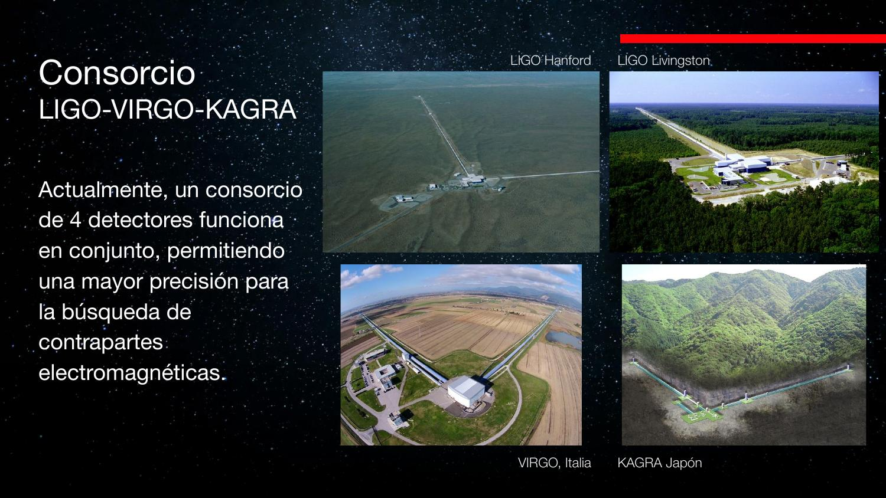
Lo que aprendimos: masas que no conocíamos
El catálogo de detecciones («Masses in the Stellar Graveyard») pobló una zona que estaba vacía: entre las estrellas de neutrones conocidas (~1–2 M☉) y los agujeros negros conocidos por métodos electromagnéticos, había un hueco de masas — incluso existían teorías para explicar por qué no había objetos ahí. Las ondas gravitacionales mostraron fusiones que crean remanentes justo en ese rango: el vacío era un sesgo de detección, no un vacío real.
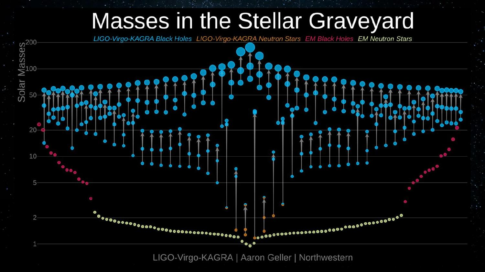
Pulsar Timing Array: el detector del tamaño de la galaxia
LIGO es sensible a λ ~ km (agujeros negros estelares). Fusiones de agujeros negros supermasivos (millones de M☉) emiten a λ ~ 10¹² m: ningún instrumento terrestre puede medirlas. La idea: los púlsares de milisegundo son relojes naturales ultra precisos. Si una onda gravitacional atraviesa el camino Tierra–púlsar, la distancia cambia y el tiempo de llegada de los pulsos se desvía. Monitoreando muchos púlsares por el cielo, se busca una desviación coherente en el espacio — la huella de una onda de longitud gigante.
Cuatro consorcios internacionales de radioobservatorios llevan años en esto. En 2023 anunciaron evidencia tentativa (~3–4 sigmas; el estándar de «detección» en física son 5) de un fondo de ondas gravitacionales que llega de todo el cielo. Aún no se detectan fusiones individuales de supermasivos: es trabajo acumulativo de décadas.
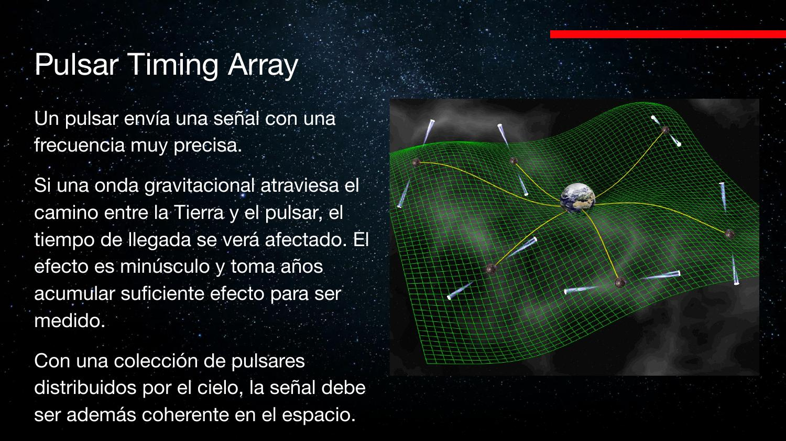
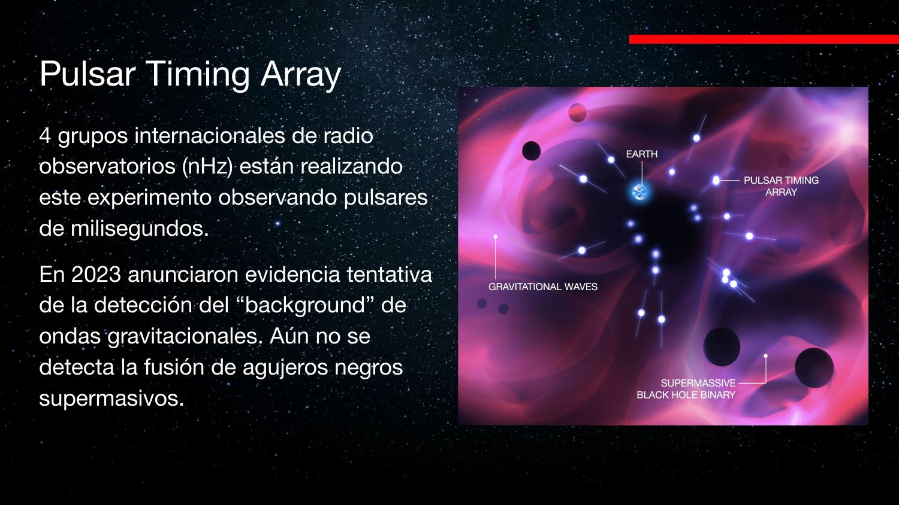
Detectores espaciales (interferómetros con satélites en órbita, tipo LISA) y cómo se planean los grandes proyectos astronómicos del futuro.
El PTA es un sistema distribuido de relojes con drift: la señal se extrae por correlación entre pares de púlsares (la curva de Hellings–Downs, material externo). Igual que en redes NTP o GPS diferencial, lo que delata la perturbación común no es un reloj individual sino la estructura de correlaciones del conjunto.
Widgets interactivos
Juega con los números de la clase.
Conceptos clave
| Concepto | Nota |
|---|---|
| Multi-messenger | Combinar luz + neutrinos + ondas gravitacionales de una misma fuente |
| Oscilación de neutrinos | Cambio de sabor νe↔νμ↔ντ en viaje ⇒ tienen masa (<10⁻⁶ me) |
| Fuerza nuclear débil | Única interacción útil del neutrino; bosones W/Z, alcance ~0,001× protón |
| Homestake | νe + ³⁷Cl → ³⁷Ar + e⁻; detectó ⅓ del flujo esperado → oscilaciones |
| Super-Kamiokande | 50 000 t de agua, 13 000 PMT; destellos Cherenkov de las interacciones |
| IceCube | 1 km³ de hielo antártico; 2017: neutrino de 290 TeV ← blazar TXS 0506+056 |
| Strain h | ΔL/L; LIGO llega a ΔL ~10⁻⁴ del tamaño de un protón |
| Interferómetro | Diferencias de camino ~λ/2 cambian interferencia constructiva↔destructiva |
| GW150914 | 14-sep-2015: 36+29 → 62 M☉; ~3 M☉ radiadas como ondas gravitacionales |
| Pulsar Timing Array | Púlsares como relojes; 2023: evidencia tentativa del fondo de OG (nHz) |
Exámenes de práctica
10 exámenes de 5 preguntas (3 alternativas autocorregibles + 2 escritas).